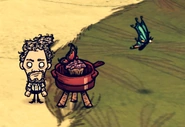

“A masterpiece takes time.”
Trước lúc gia nhập The Constant , Warly sống với người mẹ của ông ấy Maman Angeline. Maman Angeline mắc một chứng mất trí nhớ khiến bà không thể nhận ra Warly. Bà ngồi trên một chiếc ghế bập bênh với một khuôn mặt vô hồn. Warly đi vào trong ngôi nhà và bật nhạc từ máy nghe nhạc của bà, làm cho bà gõ gõ ngón tay của mình. Ông nấu cho bà món Súp Vẹm Hải Sản , một trong nhưng công thức cũ của bà đã nấu cho ông từ thời thơ ấu. Sau khi ăn một thìa súp, Ký ức của Maman Angeline trở lại và bả mỉm cưới với Warly, cuối cũng cũng đã nhận ra ông. Sau khi thưởng thức bữa ăn và chạm tay vào mặt Warly, ký ức của bà lại mờ dần, khuôn mặt trở lại vẻ vô hồn. Warly mang chiếc bát trống vào bếp, nhưng chiếc hộp nhạc bắt đầu bị bóp méo và Warly biến mất. Maman bị bỏ lại một mình trong căn nhà.
Warly khởi đầu cuộc phiêu lưu với một Nồi Hầm Di Động, ngoài các chức năng tương tự với một Nồi Hầm bình thường, nó có thể nấu 4 mòn ăn đặc biệt: Bánh Phồng Khoai Lang ,Thịt Quái Xốt Tacte , Bánh Kếp Trái Cây Tươi vàSúp Vẹm Hải Sản . Nồi Hầm Di Động có thể mang theo trên người và đặt xuống mọi lúc, tuy nhiên Warly vẫn có thể xây dựng một Nồi Hầm để nấu những bữa ăn của ông. Ngoải ra, Warly còn khởi đầu với mộtTúi Đầu Bếp có chức năng bảo quản gấp đôi thời gian hỏng của thức ăn khi đặt bên trong, ông ấy cũng có thể làm nó với công thức 1 Vải và 1 Dây Thừng .
Warly nhận thêm 33% Sức Đói , Máu và Tinh Thần từ những món ăn được nấu trong Nồi Hầm, giúp ông hồi lại nhiều Máu và Tinh Thần hơn so với những nhân vật khác từ các món ăn. Nếu thực phẩm bị giảm đi bất kỳ thuộc tính nào trong số đó, giá trị sẽ giảm 33% thay vào đó.
Trong Don't Start Together, Warly khởi đầu với 2 Khoai Tây, 1 Tỏi, và Nồi Hầm Di Động trong hành trang của ông ấy. Ông có thể tạo thêm Nồi Hầm Di Động và hai dụng cụ nấu ăn bổ sung: một Máy Nghiền Di Động để làm Bột Gia Vị, và Trạm Gia Vị Di Động một để ướp gia vị cho mọi món ăn.
Warly là nhân vật duy nhất có thể sử dụng những dụng cụ nấu ăn này. Nồi Hầm Di Động nấu nhanh hơn 20% so với Nồi Hầm. Nó có thể nấu những món ăn độc quyền cho Warly trong DST (xem Nồi Hầm Di Động để biết công thức). Thức ăn được tẩm gia vị có những hiệu quả như tăng khả năng dùng rìu khi khai thác gỗ, sức tấn công và khả năng phòng ngự. Warly cũng nấu nhanh hơn các nhân vật khác, cả với thức ăn sống qua lửa.
Khác với Shipwrecked, Warly không nhận thêm Điểm Sức Đòi, Máu và Tinh Thần từ các món ăn trong Nồi Hầm.
Trong Don't Starve Together, Sức Đồi của Warly giảm nhanh hơn 20% so với các nhân vật khác. Ngoài ra, ông chỉ có thể ăn được những món ăn được nấu từ Nồi Hầm và Nồi Hầm Di Động. Ông ấy sẽ nhớ những món ăn đã ăn trong vòng 2 ngày (giống với Shipwrecked). Sự lặp lại lần đầu sẽ giảm 10% tác dụng, lần hai là 20%, lần 3 là 35% và lần thứ tư là 50% và lần thứ năm là 70% tác dụng của thực phẩm, từ lần thứ 6 sẽ không tăng tác dụng của hình phạt này.